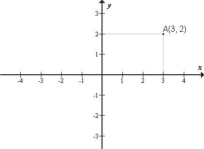
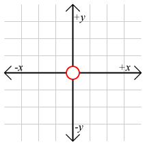

KOORDINATNI SISTEM
...by Gregor Rus, Boštjan Skok, Matej Stipič
SPLOŠNO O KOORDINATNEM SISTEMU
Koordinatni sistem Koordinatni sistem je matematično orodje, ki omogoča, da točke (in druge geometrijske objekte) zapišemo s števili - koordinatami.
Poznamo več vrst koordinatnih sistemov. V splošnem obravnavamo dva koordinatna sistema: Kartezični in Polarni.
Kartezični koordinatni sistem je pravokotni koordinatni sistem, ki ga določata dve (v dvorazsežnem prostoru) ali tri (v trirazsežnem) med seboj pravokotni osi.
Osi imenujemo abscisna os (ali os x), ordinatna os (ali os y) in aplikatna os (ali os z). Presečišče osi koordinatnega sistema je točka, ki jo imenujemo koordinatno izhodišče.
V matematiki velja dogovor, da je merska enota za obe (oziroma vse tri) osi ista, saj le v tem primeru veljajo nekatere matematične formule (npr. za kot med premicama ipd). Glavni namen koordinatnega sistema je podajanje točk s števili - koordinatami. Lego točke v kartezičnem koordinatnem sistemu opišemo s pravokotnimi projekcijami točke na koordinatne osi:
Projekcija točke na os x določa absciso točke projekcija točke na os y določa ordinato točke. Izhodišče se po navadi označuje s črko O ali s številko 0. Najpreprostejši (enorazsežni) koordinatni sistem je številska os. Izhodišče jo deli na pozitivni in negativni del. V dvorazsežnem kartezičnem koordinatnem sistemu je izhodišče točka, kjer se sekata obe (med sabo pravokotni) koordinatni osi. Izhodišče ima koordinati (0,0).
V matematiki velja dogovor, da je merska enota za obe (oziroma vse tri) osi ista, saj le v tem primeru veljajo nekatere matematične formule (npr. za kot med premicama ipd). Glavni namen koordinatnega sistema je podajanje točk s števili - koordinatami. Lego točke v kartezičnem koordinatnem sistemu opišemo s pravokotnimi projekcijami točke na koordinatne osi:

Projekcija točke na os x določa absciso točke projekcija točke na os y določa ordinato točke. Izhodišče se po navadi označuje s črko O ali s številko 0. Najpreprostejši (enorazsežni) koordinatni sistem je številska os. Izhodišče jo deli na pozitivni in negativni del. V dvorazsežnem kartezičnem koordinatnem sistemu je izhodišče točka, kjer se sekata obe (med sabo pravokotni) koordinatni osi. Izhodišče ima koordinati (0,0).
